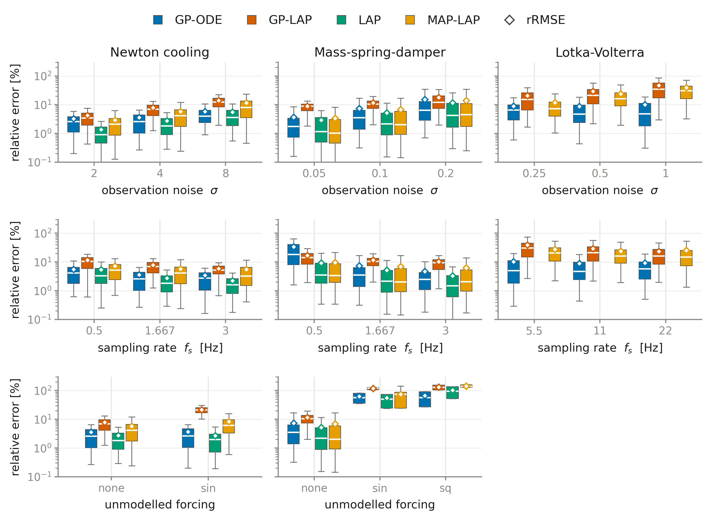
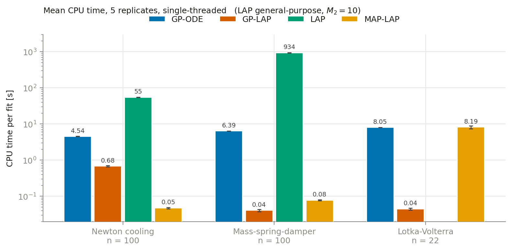
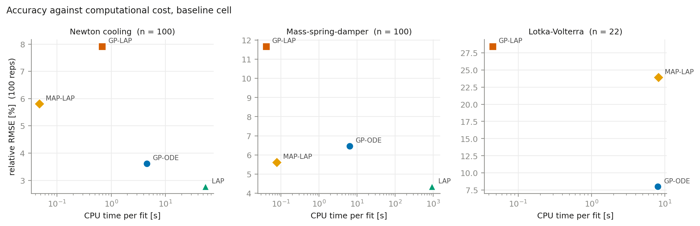
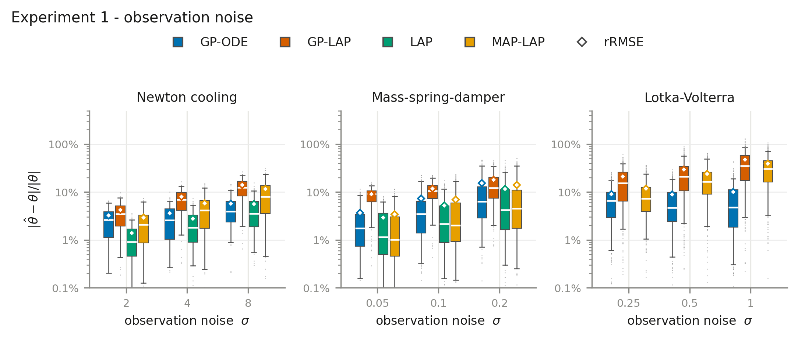
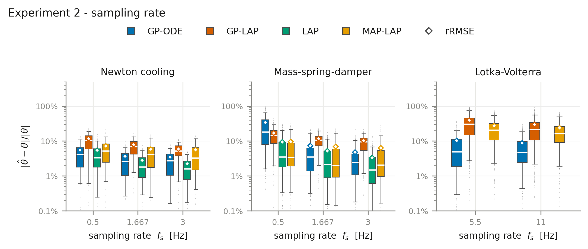
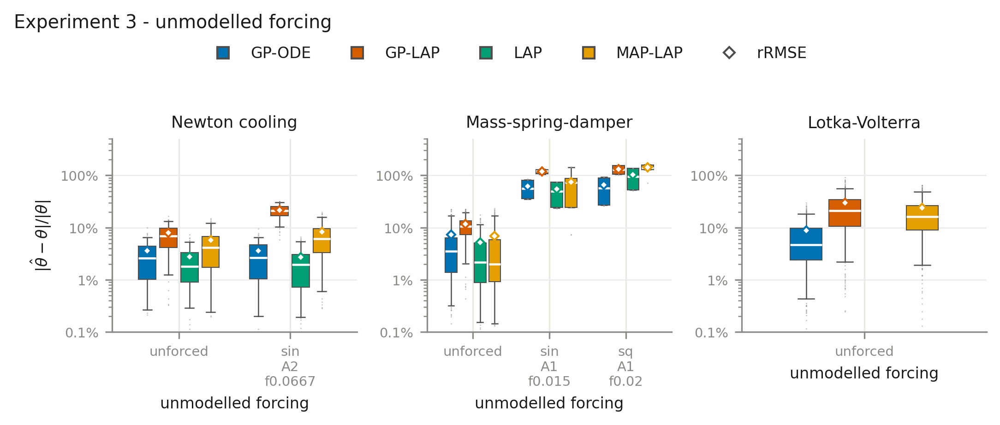
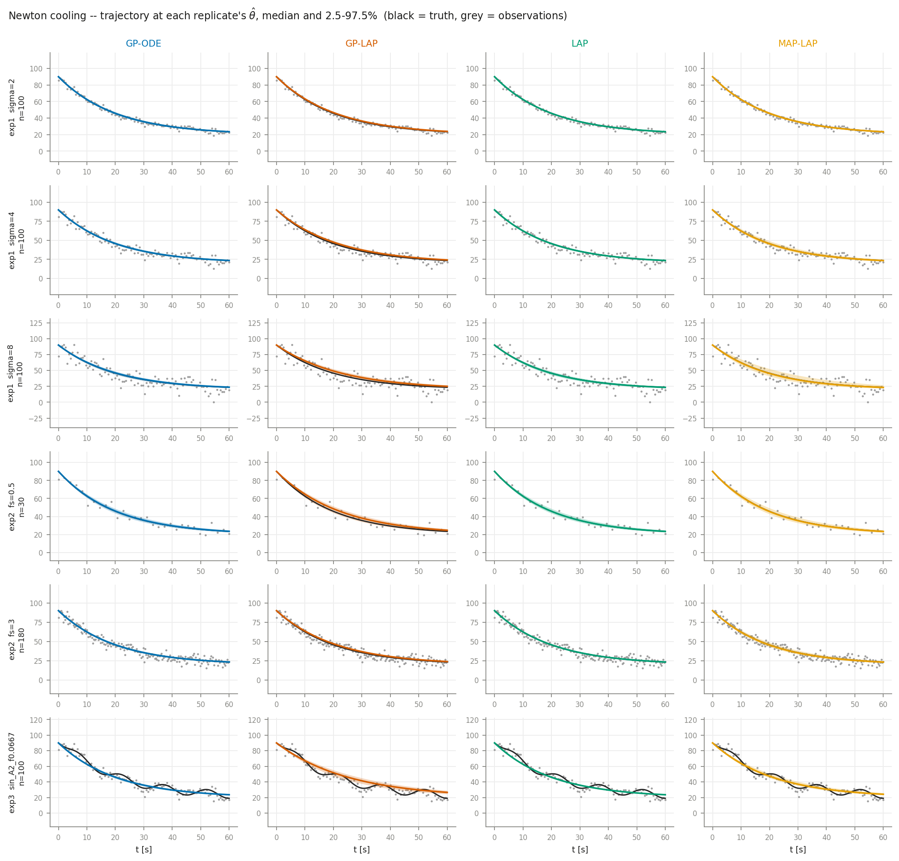
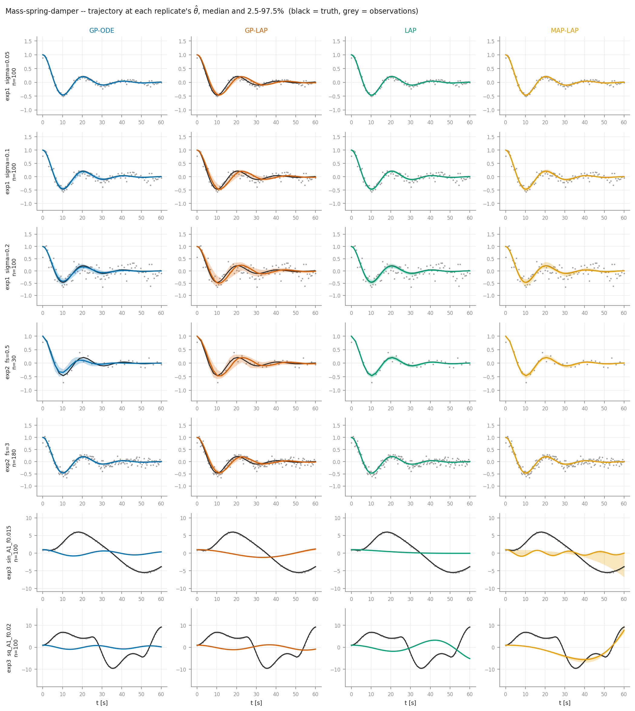
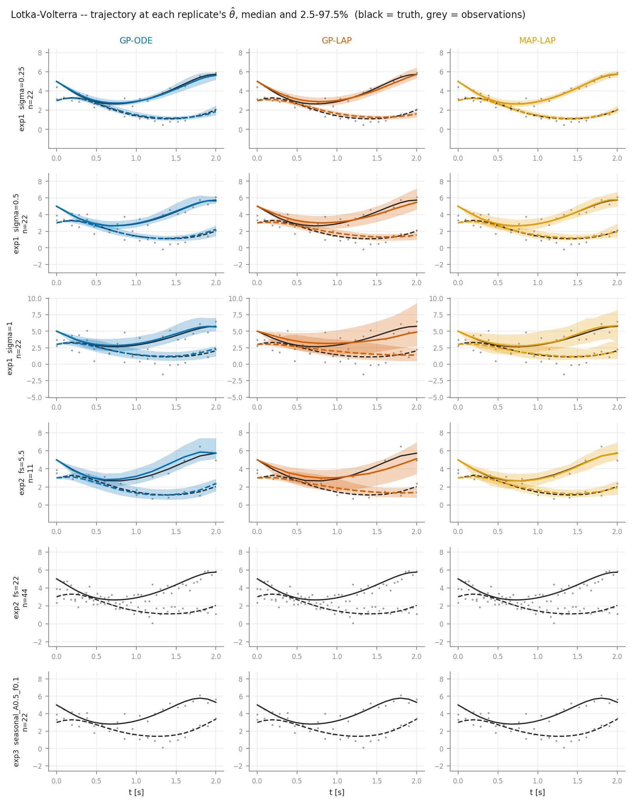

Abstract
Introduction
Methodology
Experimental setup
Detailed results
Overview

Computational cost
Mean single-threaded CPU time per fit over five replicates. Complexity is given in the number of observations n, parameters q, Gibbs iterations N, optimiser iterations I, and the LAP grid half-width M2 = 10.
| Method | Complexity | Cooling n = 100 | MSD n = 100 | LV n = 22 |
|---|---|---|---|---|
| GP-ODE | O(N n³) | 4.54 | 6.39 | 8.05 |
| GP-LAP | O(n³ + I n) | 0.68 | 0.04 | 0.05 |
| LAP | O((2M2+1)q n) | 54.9 | 934 | — |
| MAP-LAP | O(I n) | 0.05 | 0.08 | 8.19 |


Experiment 1 — observation noise

Experiment 2 — sampling rate

Experiment 3 — unmodelled forcing

Posterior predictive trajectories
Each method's estimated parameters integrated forward from the true initial condition, over all 100 replicates. The band is the 2.5–97.5 percentile across replicates; black is the true trajectory and grey the observations.



Discussion
Data
Replicate-level results for every method, system and cell. One row per (cell, replicate, method, parameter), with the point estimate, posterior standard deviation, 95% credible interval and runtime.